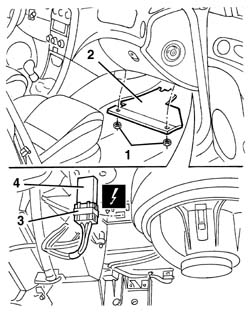

5020L48 additional heater control unit - r r
- Path
- Procedures > 50 AUXILIARY UNITS > 5020 HEATER > 5020L additional heater > 5020L48 additional heater control unit - r r
- Kind
- repair procedure (removal / refitting; the operation number is the code)
- Applies to
- engines: 1.9 JTD 8v , 2.4 JTD 10v; all production periods
- Interactive page
- https://sloeber94.github.io/elrnDB-a156/en/#/3238302
Applies to: engines: 1.9 JTD 8v , 2.4 JTD 10v; all production periods
 Removing
Removing
 Refitting
Refitting1. Unscrew the nuts.
2. Remove the right panel under the dashboard.
3. Disconnect the base of the control unit from the bracket.
4. Disconnect the control unit from the base.
 | Name | Connector |
|---|---|---|
4 | Additional heater control unit |

Applies to: engines: 1.9 JTD 8v , 2.4 JTD 10v; all production periods
Refitting
RemovingCheck that the control unit is undamaged.
Connect the control unit to the base.
Connect the base and control unit to the bracket.
Position the right panel under the dashboard and secure it using the nuts.
Check that the additional heating system is working properly.